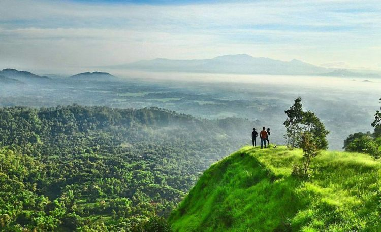
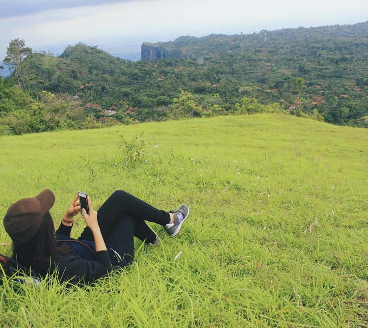

Bereksplorasi ke Jawa Timur seolah tiada berujung. Bagai sebuah sumur vakansi yang tidak memiliki dasar. Banyak banget wisata yang bisa kamu jamah di Jawa Timur. Dari mulai wisata alam, kuliner, hingga kebudayaan. Salah satunya adalah kota kelahiran Reog, Ponorogo. Ya, Kota Ponorogo memang terkenal dengan Reognya yang telah mendunia. Tapi, nggak cuma kesenian Reog saja yang membuat semua orang tertarik untuk kembali dan singgah ke kota ini.
Selain Reog, berikut ini adalah beberapa destinasi wisata Ponorogo yang bisa kamu kunjungi dengan tenang. Meski beberapa sudah terjamah ramai oleh para pelancong, seperti Goa Lowo dan sebagainya, sebenarnya masih ada loh beberapa surga tersembunyi di tanah Reog yang bisa kamu daftarkan dalam agenda perjalananmu.
Buat kamu yang butuh vitamin A, karena kerjaanmu yang menyiksa mata, cobalah untuk menanjak ke Gunung Bedes.
Wisata pertama yang perlu kamu jamah ketika menjejakkan kaki di tanah Ponorogo adalah Gunung Bedes. Bukit ini berada di perbatasan Ponorogo dan Trenggalek, tepatnya di Dusun Buyut, Desa Ngadirojo, Kecamatan Sooko. Di puncak bukit setinggi 200 mdpl ini, matamu akan diremajakan dengan pemandangan serba hijau yang menyehatkan. Apalagi kalau setiap hari kerjaanmu memandang layar komputer! Beuh! Butuh banget vitamin A tuh!
Mampirlah ke Masjid Hill! Kamu akan sadar betapa manusia ini sungguh kecil dibanding dengan semesta ciptaan Tuhan!

Terletak di desa Pandak Balong, Kecamatan Balong, Masjid Hill atau Gunung Masjid menjadi salah satu destinasi wisata yang masih belum ramai dikunjungi oleh para pelancong. Entah kenapa bukit ini dinamai Masjid Hill. Mungkin karena ketika kamu berada di puncaknya, kamu akan merasa bahwa Tuhan memang Pemilik Segalanya. Sehingga akan muncul kesadaraan atas dirimu sendiri bahwa manusia nggak ada apa-apanya di dunia ini. Masjid Hill, wahana penyerahan diri atas semesta. Mungkin.
Nah, di sini kamu bisa menikmati indahnya alam Ponorogo dan beberapa bukit mungil nan hijau seperti layaknya bukit Teletubies. Kira-kira butuh waktu hingga 40 menit untuk bisa mencapai puncaknya. Nah, buruan ke sana deh, mumpung masih sepi!
Buat kamu yang suka camping, coba deh ke Bukit Pare di desa Cepoko. Camping Ground asyik di Kota Ponorogo!

Terletak di desa Cepoko, Kecamatan Ngrayun, bukit ini memiliki trek yang cukup bikin berkeringat. Buat kamu yang belum pernah mendaki, mungkin perjalanan ini akan melelahkan. Ya, paling nggak ada 3-4 km jalan yang mesti kamu tempuh. Tapi, begitu sampai di puncaknya, kamu nggak akan merasa letih sama sekali! Sedikit deng. Kamu akan disuguhi pemandangan yang amazing! Hamparan rumput hijau yang sangat menggoda. Cukup recommended sih buat kamu yang pengin camping di sini.